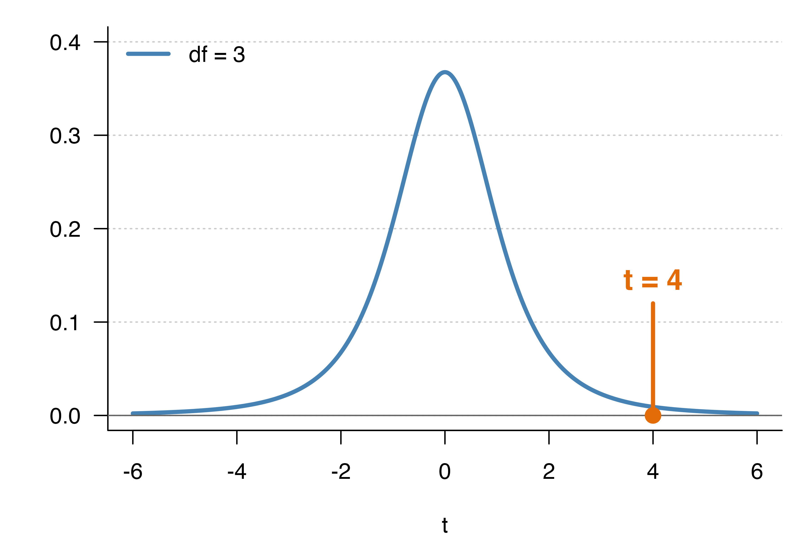
18 母平均の仮説検定
母平均が、ある値と違うかどうかをどう判断するか？
・仮説検定の考え方
・帰無仮説と対立仮説、有意水準と棄却域、検定統計量とP値、エクセルでの計算方法
18.1 仮説検定の目的
あなたは東京の飲食店でアルバイトをしています。時給は 1,000円 です。店長からは東京都の飲食店で働く大学生の平均の時給にしていると言われました。しかしながら、大学の友人と話をしていたら、時給が1,200円の人、900円の人と様々でした。自分の時給が、東京都の飲食店で働く大学生の平均時給とは違うのではないかと考え始めました。
そこで、（東京でバイトしている大学生の時給を全て調べることはできないので）東京でバイトしている大学生から無作為に標本（サンプル）を抽出して調べることにしました。この標本から得られた推定量（標本平均）を使い、自分の時給（1,000円）が、東京でバイトしている大学生の平均時給と違うかどうかを調べます（検定します）。
18.2 仮説検定の手順
- 仮説を設定する。
- 自分が証明したいことの仮説を設定します。
- 有意水準を決める（これで臨界値 critical value が決まる）。
- どの程度の確からしさで結論を出すかを決めます。
- 検定統計量 \(t\) を求める（P値を計算する）。
- 仮説を基に、分布に従うべき値（検定統計量）を求めます。
- 検定統計量と臨界値を比較する（P値と有意水準を比較する）。
- 計算した検定統計量が、あり得ることか、あり得ないことかを検証します。
- 検定の結論を出す。
以下では、この手順に沿って説明します。
18.3 帰無仮説と対立仮説
手順1：仮説を設定する
自分の時給（1,000円）が、東京でバイトしている大学生の平均時給と違うかどうかを調べます（検定します）。
- 帰無仮説
- 東京でバイトしている大学生の平均時給が1,000円であると仮定します。
- これを帰無仮説（null hypothesis, \(H_0\)）といいます。
- あえて自分が主張したいことと反対のこと（大学生の平均時給が1,000円である）を帰無仮説として提示し、その仮説が正しくないことを示す（つまり仮説を無に帰す）ことで、自分の主張の正当性を示します。
- そして、この仮説が正しいかどうかを検証（検定）します。
- 対立仮説
- 東京でバイトしている大学生の平均時給は1,000円ではない、とします。
- これを対立仮説（alternative hypothesis, \(H_1\)）といいます。
- 帰無仮説が正しくなかった場合（帰無仮説が棄却された場合）に、対立仮説が正しいと判断されます。
18.4 仮説検定の論理
対立仮説（\(H_1\)）の正しさを主張するために、対立仮説とは反対の帰無仮説（\(H_0\)）の正しさを否定します。
- 帰無仮説（\(H_0\)）：東京でバイトしている大学生の平均時給は1,000円である
\[ H_0: \mu = \mu_0 \quad \text{つまり} \quad \mu = 1{,}000 \]
- 対立仮説（\(H_1\)）：東京でバイトしている大学生の平均時給は1,000円ではない
\[ H_1: \mu \neq \mu_0 \quad \text{つまり} \quad \mu \neq 1{,}000 \]
ここで、\(\mu_0\) は帰無仮説で仮定する母平均の値（ここでは1,000）を表します。
Note留意点：なぜ「1,000円である」を帰無仮説にするのか？
帰無仮説では母数（母平均）に一つの値を仮定し、対立仮説では一つの値を仮定しません。
- \(H_0: \mu = \mu_0 \ \text{つまり} \ \mu = 1{,}000\)（母平均は1,000である）
- \(H_1: \mu \neq \mu_0 \ \text{つまり} \ \mu \neq 1{,}000\)（母平均は1,000以外である）
したがって、帰無仮説が棄却されても、母平均が一つの値に分かるわけではありません。
それなら、以下のように帰無仮説と対立仮説を入れ替えて検定すれば良い、と考えることもできます。
- \(H_0: \mu \neq \mu_0 \ \text{つまり} \ \mu \neq 1{,}000\)（母平均は1,000以外である）
- \(H_1: \mu = \mu_0 \ \text{つまり} \ \mu = 1{,}000\)（母平均は1,000である）
しかし、これだと母平均が1,000以外である無数の場合をすべて検証しなければならなくなり、これは不可能です。帰無仮説には、計算の基準にできる「一つの値」を置く必要があります。
18.5 標本平均の分布
手順3：検定統計量 \(t\) を求める
東京でバイトしている大学生から無作為に標本（サンプル）を一つ抽出し、この標本から次の推定量を得たとします。
- 標本平均 \(\bar{X}\)
- 標本（不偏）分散 \(s^2\)
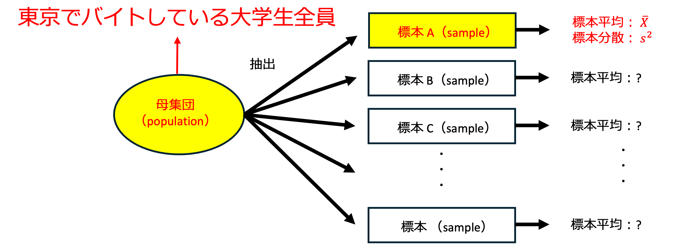
標本平均 \(\bar{X}\) の分布は、平均 \(\mu\)、分散 \(\dfrac{\sigma^2}{n}\) の正規分布に従います。そして、母分散 \(\sigma^2\) を標本（不偏）分散 \(s^2\) で置き換えて標準化すると、自由度 \(n-1\) の \(t\) 分布に従います。
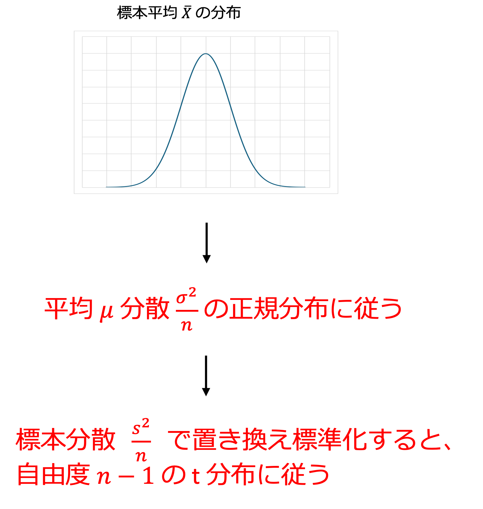
18.6 検定統計量
標本平均 \(\bar{X}\) を、平均 \(\mu\) と標本（不偏）分散 \(s^2\) を使って標準化すると、自由度 \(n-1\) の \(t\) 分布に従います。
\[ t = \frac{\bar{X} - \color{#E36C09}{\mu}}{\frac{s}{\sqrt{n}}} \]
今、我々は帰無仮説で \(\mu = 1{,}000\) と仮定しているので、次の値が自由度 \(n-1\) の \(t\) 分布に従うはずだと考えられます。この値を検定統計量（\(t\) 値、\(t\) statistic）といいます。
\[ t = \frac{\bar{X} - \color{#E36C09}{1{,}000}}{\frac{s}{\sqrt{n}}} \]
実際の計算では、手元の標本から求めた標本平均（観測値）\(\bar{x}\) を代入します（前回と同じく、確率変数は大文字 \(\bar{X}\)、観測値は小文字 \(\bar{x}\) で書きます）。
この \(t\) が分布のどこにあるかを確認し、これがどの程度あり得ることかを判定します。（つまり、母平均が1,000円だったと仮定した際に、起こり得る確率を求め、母平均が1,000円という仮説を棄却できるかを判定します。）
- 標本から得られた標本平均 \(\bar{x}\) と、我々が母平均と仮定した 1,000 が近ければ、\(t\) は分布の真ん中（ゼロ）に近くなります。この場合は十分あり得ることと考えられるので、帰無仮説は棄却されません。
- 逆に、\(\bar{x}\) と 1,000 が遠い場合は、\(t\) が分布の端に近くなります。この場合はあまりないことだと考えられるので、その原因は帰無仮説が間違っていることにあると考え、帰無仮説を棄却し、対立仮説が正しいと判断します。
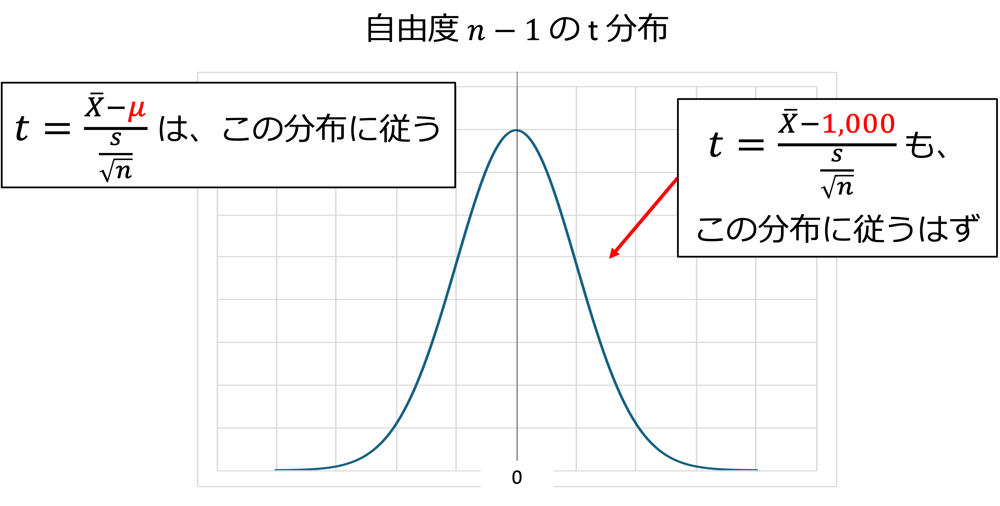
18.7 具体的な計算
仮に、標本サイズ \(n = 4\) の標本から、以下のような推定量が得られたとします。
- 標本平均 \(\bar{x} = 1{,}020\)
- 標本（不偏）分散 \(s^2 = 100\)（したがって \(s = 10\)）
このとき、検定統計量は次のようになります。
\[ t = \frac{\bar{x} - 1{,}000}{\frac{s}{\sqrt{n}}} = \frac{1{,}020 - 1{,}000}{\frac{10}{\sqrt{4}}} = \frac{20}{\frac{10}{2}} = \frac{20}{5} = 4 \]
そして、これは自由度 \(n - 1 = 4 - 1 = 3\) の \(t\) 分布に従うはずなので、自由度3の \(t\) 分布でその位置（\(t = 4\)）を確認すると、下の図のようにかなり端になります。
これはあまりないことだと考えられるので、帰無仮説が間違っていたと判断されます。つまり、母平均は1,000ではないと判断されます。
では、「かなり端」とは、どこから先のことでしょうか。これを決めるのが、次の棄却域と有意水準です。
18.8 棄却域
手順4：検定統計量と臨界値を比較する（手順2の有意水準も、ここで説明します）
分布の両端の「あまりないこと」と判断する領域を棄却域といいます。検定統計量 \(t\) が棄却域に入れば、帰無仮説を棄却します。
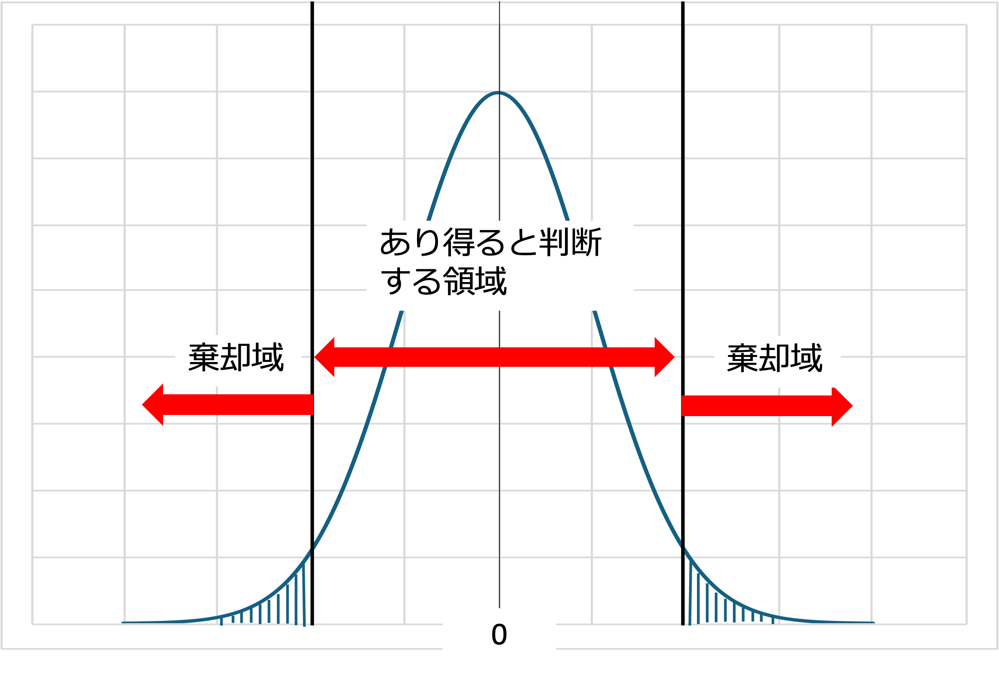
18.9 有意水準（自分で設定する基準）
- 棄却域の割合を有意水準といいます。
- 定められた有意水準を与える値（棄却域の境目の値）を臨界値（critical value）といいます。
- 下の図の場合は、棄却域が両側で合わせて5%なので、有意水準5%となります。
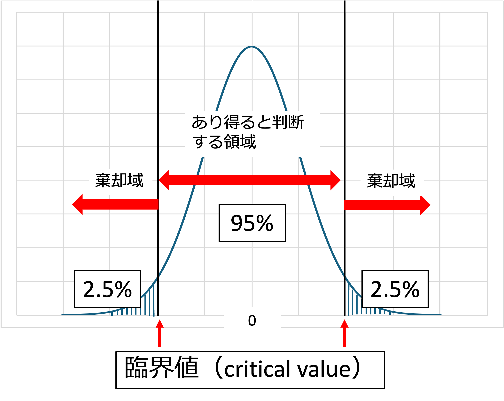
有意水準は、分析する人が検定の前に自分で決めます。慣習として、10%、5%、1% のいずれかがよく使われます。
18.9.1 有意水準10%
- 両側を足して10%を「あまりない場合」として、帰無仮説を棄却します。
- つまり、主張したい対立仮説が正しいと判断します。
- 慣習として、一番緩い（甘い）設定です。
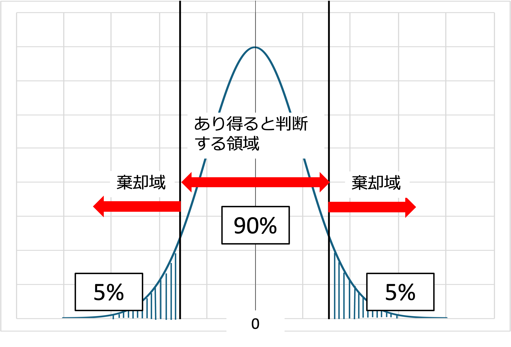
18.9.2 有意水準5%
- 両側を足して5%を「あまりない場合」として、帰無仮説を棄却します。
- 10%よりも厳しい判断です。
- 慣習として、一番多く用いられる設定です。
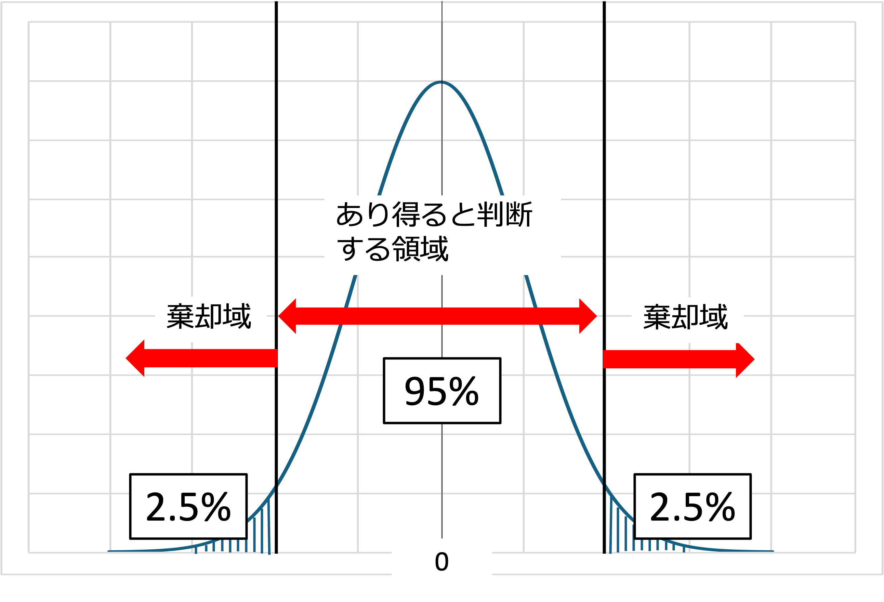
18.9.3 有意水準1%
- 両側を足して1%（片側0.5%ずつ）を「あまりない場合」として、帰無仮説を棄却します。
- 1%の珍しい場合のみ、帰無仮説を棄却（自分の主張を採択）します。
- 慣習として、最も厳しい設定です。
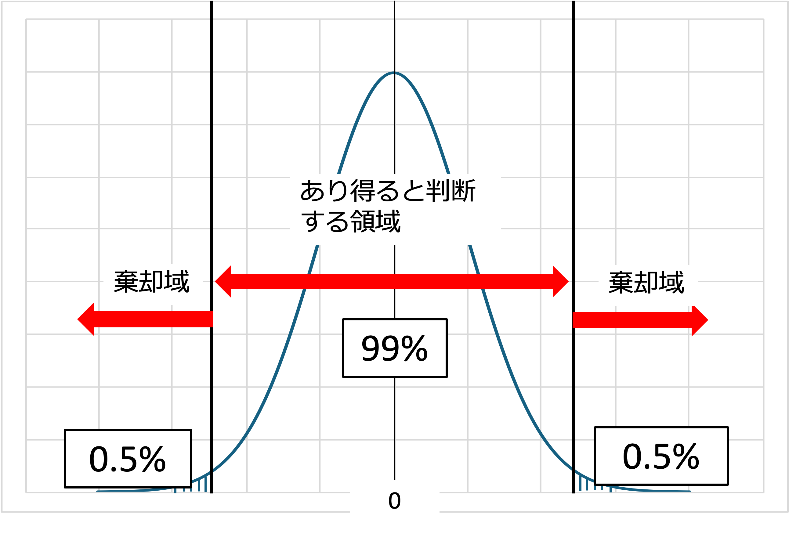
18.10 検定統計量とP値
検定統計量 \(t\) と臨界値を比べる代わりに、P値（P-value）と有意水準を比べる方法もあります。
- P値
- 帰無仮説が正しいと仮定したときに、実際に計算した \(t\) 値と同じか、それよりも極端な値が得られる確率です。
- 両側検定の場合は、分布の \(-|t|\) より左側と、\(|t|\) より右側の面積を合計したものになります（下の図のオレンジ部分）。
- 判断の方法
- P値が有意水準より小さい（P値 < 有意水準）ならば、帰無仮説を棄却します。
- P値が有意水準以上ならば、帰無仮説を棄却しません。
- 臨界値との関係
- 「\(|t|\) が臨界値より大きい」ことと、「P値が有意水準より小さい」ことは、同じことを表しています。
- \(t\) が棄却域の中にあれば、\(t\) より外側の面積（P値）は、棄却域の面積（有意水準）より小さくなるためです。
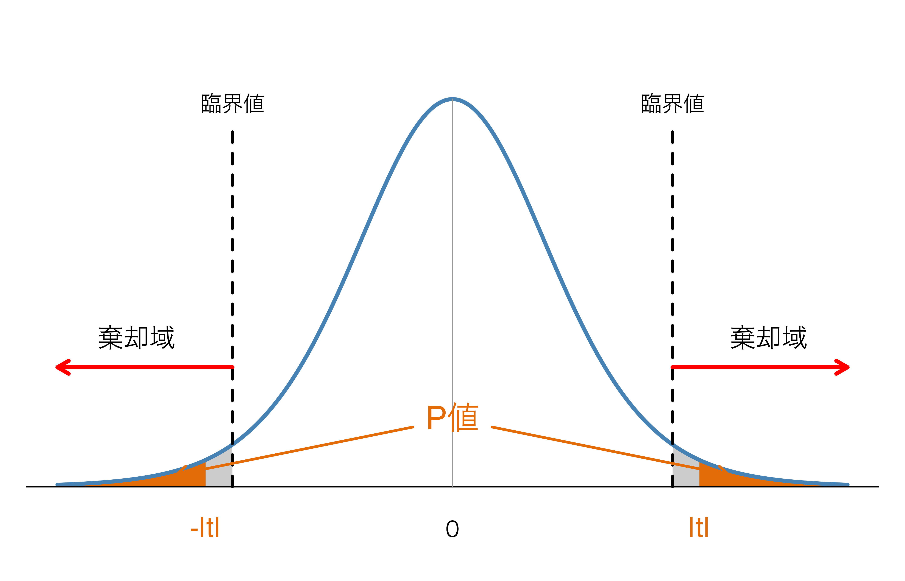
「具体的な計算」の例で確かめてみましょう
\(n = 4\)（自由度3）で \(t = 4\) だった例について、P値の部分を塗ったのが下の図です。オレンジの部分の面積がP値、点線は有意水準5%の臨界値です。自由度や \(t\) 値を変えて、P値や臨界値がどう変わるかも確かめてみましょう。
NoteP値の読み方の注意
- P値は「帰無仮説が正しい確率」ではありません。「帰無仮説が正しいとしたら、今回のようなデータ（またはそれより極端なデータ）がどのくらいの確率で得られるか」を表す値です。
- P値が小さいほど、「帰無仮説が正しいとすると、今回のデータはとても珍しい」ということになり、帰無仮説を疑う根拠が強くなります。
- 統計ソフトやエクセルの分析ツールでは、多くの場合、臨界値ではなくP値が出力されます。
18.11 検定の結論
手順5：検定の結論を出す
- 帰無仮説（\(H_0\)）：東京でバイトしている大学生の平均時給は1,000円である
- 対立仮説（\(H_1\)）：東京でバイトしている大学生の平均時給は1,000円ではない
- 帰無仮説が棄却された場合
- 対立仮説が正しいと判断し、対立仮説をそのまま主張します。
- 例：「東京でバイトしている大学生の平均時給は1,000円ではない（有意水準5%）」
- 帰無仮説が棄却できなかった場合
- 対立仮説が正しいとはいえません。つまり、「平均時給は1,000円ではない、とはいえない」という結論になります。
- 帰無仮説が棄却されないからといって、帰無仮説が正しい（平均時給が1,000円である）とは限りません。
Note前回（信頼区間）とのつながり
「具体的な計算」の例（\(n = 4\)、\(\bar{x} = 1{,}020\)、\(s = 10\)）で、前回学んだ母平均の95%信頼区間を求めてみます（自由度3、\(t_{0.025}(3) = 3.182\)）。
\[ 1{,}020 \pm 3.182 \times \frac{10}{\sqrt{4}} = 1{,}020 \pm 15.9 \quad \rightarrow \quad [1{,}004.1,\ 1{,}035.9] \]
この区間には1,000が含まれていません。一方、有意水準5%の両側検定では、帰無仮説 \(\mu = 1{,}000\) が棄却されました。
- 「\(\mu_0\) が95%信頼区間に含まれない」ことと、「有意水準5%の両側検定で帰無仮説 \(\mu = \mu_0\) が棄却される」ことは、同じことを表しています。
- 99%信頼区間は \(1{,}020 \pm 5.841 \times 5 = [990.8,\ 1{,}049.2]\) で、1,000を含みます。有意水準1%では棄却されなかった結果（「エクセルでの計算方法」参照）と一致します。
18.12 仮説検定の手順まとめ
- 仮説を設定する。
- 有意水準を決める（これで臨界値 critical value が決まる）。
- 検定統計量 \(t\) を求める（P値を計算する）。
- 検定統計量と臨界値を比較する（P値と有意水準を比較する）。
- 検定の結論を出す。
18.13 片側検定
これまでの検定は、対立仮説が「1,000円ではない」（高い場合と低い場合の両方）だったので、棄却域を分布の両側に置きました。これを両側検定といいます。
対立仮説を「高い」または「低い」の一方だけにする場合は、棄却域を分布の片側だけに置きます。これを片側検定といいます。
- 帰無仮説（\(H_0\)）：東京でバイトしている大学生の平均時給は1,000円である
\[ H_0: \mu = \mu_0 \quad つまり \quad \mu = 1{,}000 \]
- 対立仮説（\(H_1\)）：東京でバイトしている大学生の平均時給は1,000円ではない（両側検定）
\[ H_1: \mu \neq \mu_0 \quad つまり \quad \mu \neq 1{,}000 \]
- 対立仮説（\(H_1\)）：東京でバイトしている大学生の平均時給は1,000円より高い（片側検定）
\[ H_1: \mu > \mu_0 \quad つまり \quad \mu > 1{,}000 \]
- 対立仮説（\(H_1\)）：東京でバイトしている大学生の平均時給は1,000円より低い（片側検定）
\[ H_1: \mu < \mu_0 \quad つまり \quad \mu < 1{,}000 \]
18.14 片側検定を行う際の留意点
- 通常は両側検定を行います。
- 片側検定だと、基準が緩い検定になります（有意水準の確率が片側に寄るため）。
- 例えば有意水準5%の場合、両側検定では片側2.5%ずつですが、片側検定では片側に5%すべてを置きます。そのため臨界値が0に近くなり、帰無仮説が棄却されやすくなります。
- 片側検定を使うのは、\(\mu\) の値が \(\mu_0\) より小さい（大きい）ことを信じるに足る、強い理論的根拠がある場合に限ります。
- それ以外の場合には、より厳密な検定ができる両側検定を使った方が良いです。
対立仮説が \(\mu < \mu_0\) の場合（左側検定）
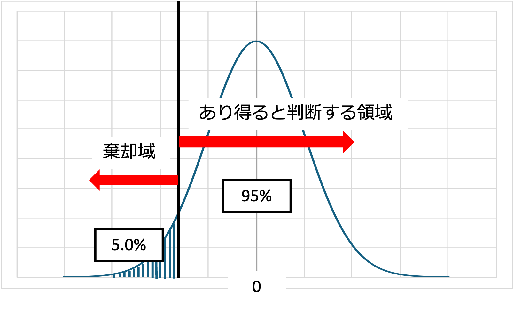
対立仮説が \(\mu > \mu_0\) の場合（右側検定）
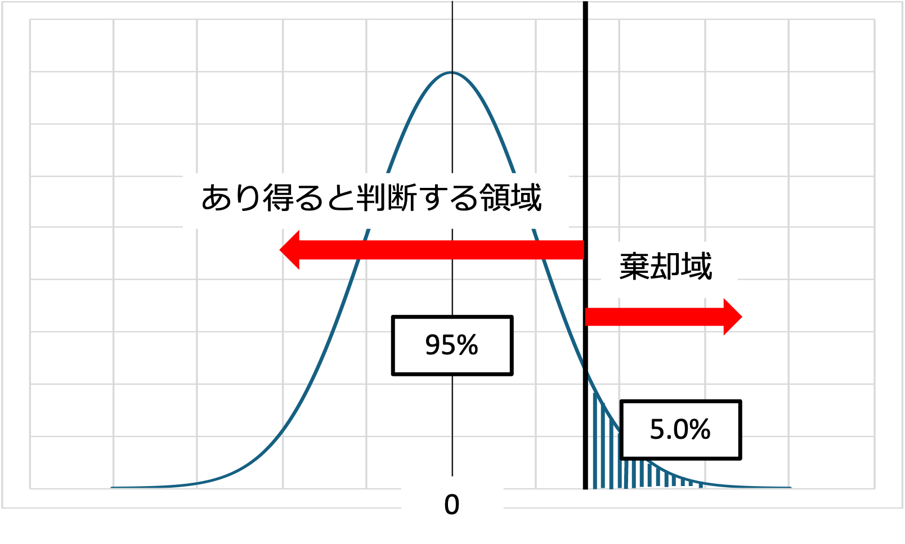
18.15 エクセルでの計算方法
「具体的な計算」の例（\(n = 4\)、\(\bar{x} = 1{,}020\)、\(s^2 = 100\)）を、エクセルで計算してみます。
| 求めるもの | エクセルの式 | 結果 |
|---|---|---|
| 標準偏差 \(s\) | =SQRT(100) |
10 |
| 検定統計量 \(t\) | =(1020-1000)/(10/SQRT(4)) |
4 |
| 臨界値（両側・有意水準5%） | =T.INV.2T(0.05, 3) |
3.182 |
| 臨界値（両側・有意水準1%） | =T.INV.2T(0.01, 3) |
5.841 |
| P値（両側） | =T.DIST.2T(ABS(4), 3) |
0.028 |
- 関数の使い方
T.INV.2T(有意水準, 自由度)：両側検定の臨界値を求めます。T.DIST.2T(t値の絶対値, 自由度)：両側検定のP値を求めます。\(t\) 値がマイナスのときはエラーになるので、ABS関数で絶対値にして入れます。- 自由度は \(n - 1\) なので、この例では3です。
- t分布表で臨界値を読む場合
- 課題のシート「t分布のパーセント点表」は、表の上の確率が片側（上側）の確率 \(\alpha\) です。両側検定では、有意水準を半分にした列を見ます。
- 両側・有意水準10% → 0.05 の列、両側・有意水準5% → 0.025 の列、両側・有意水準1% → 0.005 の列。行は自由度 \(n - 1\) です。
- 例：自由度3、両側・有意水準5% → 0.025 の列の3の行 → 3.182（
T.INV.2T(0.05, 3)と同じ値）。
- 結果の読み方
- 有意水準5%の場合：\(t = 4\) は臨界値3.182より大きく、P値0.028は0.05より小さいので、帰無仮説は棄却されます。つまり、「平均時給は1,000円ではない」と判断されます。
- 有意水準1%の場合：\(t = 4\) は臨界値5.841より小さく、P値0.028は0.01より大きいので、帰無仮説は棄却されません。
- このように、同じデータでも、有意水準の決め方によって結論が変わることがあります。有意水準を検定の前に決めておくのはこのためです。
- データから直接計算する場合
- 元のデータがA列（A2〜A5）に入力されているとすると、標本平均は
=AVERAGE(A2:A5)、標本（不偏）分散は=VAR.S(A2:A5)、標準偏差は=STDEV.S(A2:A5)、標本サイズは=COUNT(A2:A5)で求められます。
- 元のデータがA列（A2〜A5）に入力されているとすると、標本平均は
- 片側検定の場合
- 臨界値は
=T.INV(0.95, 3)（右側検定・有意水準5%、結果は2.353）、P値は=T.DIST.RT(4, 3)（右側検定、結果は0.014）で求められます。 - \(t\) が対立仮説の向き（右側検定なら \(t > 0\)）にあるとき、片側検定のP値は両側検定のP値のちょうど半分になります。逆向きのときは、\(1 - (\text{両側のP値}) / 2\) になり、帰無仮説は棄却されません。
- 臨界値は